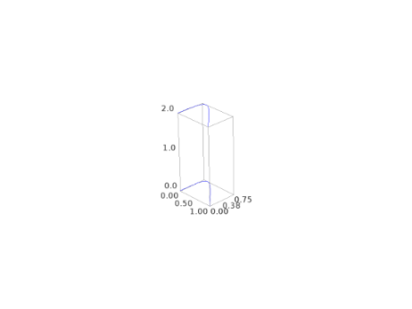
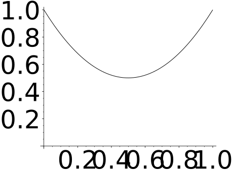

Bezier Paths¶
-
class
sage.plot.bezier_path.BezierPath(path, options)¶ Bases:
sage.plot.primitive.GraphicPrimitive_xydataPath of Bezier Curves graphics primitive.
The input to this constructor is a list of curves, each a list of points, along which to create the curves, along with a dict of any options passed.
EXAMPLES:
sage: from sage.plot.bezier_path import BezierPath sage: BezierPath([[(0,0), (.5,.5),(1,0)],[(.5,1),(0,0)]], {'linestyle':'dashed'}) Bezier path from (0, 0) to (0, 0)
We use
bezier_path()to actually plot Bezier curves:sage: bezier_path([[(0,0),(.5,.5),(1,0)],[(.5,1),(0,0)]], linestyle="dashed") Graphics object consisting of 1 graphics primitive
-
get_minmax_data()¶ Returns a dictionary with the bounding box data.
EXAMPLES:
sage: b = bezier_path([[(0,0),(.5,.5),(1,0)],[(.5,1),(0,0)]]) sage: d = b.get_minmax_data() sage: d['xmin'] 0.0 sage: d['xmax'] 1.0
-
plot3d(z=0, **kwds)¶ Returns a 3D plot (Jmol) of the Bezier path. Since a
BezierPathprimitive contains only \(x,y\) coordinates, the path will be drawn in some plane (default is \(z=0\)). To create a Bezier path with nonzero (and nonidentical) \(z\) coordinates in the path and control points, use the functionbezier3d()instead ofbezier_path().EXAMPLES:
sage: b = bezier_path([[(0,0),(0,1),(1,0)]]) sage: A = b.plot3d() sage: B = b.plot3d(z=2) sage: A + B Graphics3d Object
sage: bezier3d([[(0,0,0),(1,0,0),(0,1,0),(0,1,1)]]) Graphics3d Object
-
-
sage.plot.bezier_path.bezier_path(path, alpha=1, fill=False, thickness=1, rgbcolor=0, 0, 0, zorder=2, linestyle='solid', **options)¶ Returns a Graphics object of a Bezier path corresponding to the path parameter. The path is a list of curves, and each curve is a list of points. Each point is a tuple
(x,y).The first curve contains the endpoints as the first and last point in the list. All other curves assume a starting point given by the last entry in the preceding list, and take the last point in the list as their opposite endpoint. A curve can have 0, 1 or 2 control points listed between the endpoints. In the input example for path below, the first and second curves have 2 control points, the third has one, and the fourth has no control points:
path = [[p1, c1, c2, p2], [c3, c4, p3], [c5, p4], [p5], …]
In the case of no control points, a straight line will be drawn between the two endpoints. If one control point is supplied, then the curve at each of the endpoints will be tangent to the line from that endpoint to the control point. Similarly, in the case of two control points, at each endpoint the curve will be tangent to the line connecting that endpoint with the control point immediately after or immediately preceding it in the list.
So in our example above, the curve between p1 and p2 is tangent to the line through p1 and c1 at p1, and tangent to the line through p2 and c2 at p2. Similarly, the curve between p2 and p3 is tangent to line(p2,c3) at p2 and tangent to line(p3,c4) at p3. Curve(p3,p4) is tangent to line(p3,c5) at p3 and tangent to line(p4,c5) at p4. Curve(p4,p5) is a straight line.
INPUT:
path– a list of lists of tuples (see above)alpha– default: 1fill– default: Falsethickness– default: 1linestyle– default:'solid', The style of the line, which is oneof
'dashed','dotted','solid','dashdot', or'--',':','-','-.', respectively.
rgbcolor– default: (0,0,0)zorder– the layer in which to draw
EXAMPLES:
sage: path = [[(0,0),(.5,.1),(.75,3),(1,0)],[(.5,1),(.5,0)],[(.2,.5)]] sage: b = bezier_path(path, linestyle='dashed', rgbcolor='green') sage: b Graphics object consisting of 1 graphics primitive
To construct a simple curve, create a list containing a single list:
sage: path = [[(0,0),(.5,1),(1,0)]] sage: curve = bezier_path(path, linestyle='dashed', rgbcolor='green') sage: curve Graphics object consisting of 1 graphics primitive
Extra options will get passed on to
show(), as long as they are valid:sage: bezier_path([[(0,1),(.5,0),(1,1)]], fontsize=50) Graphics object consisting of 1 graphics primitive sage: bezier_path([[(0,1),(.5,0),(1,1)]]).show(fontsize=50) # These are equivalent
